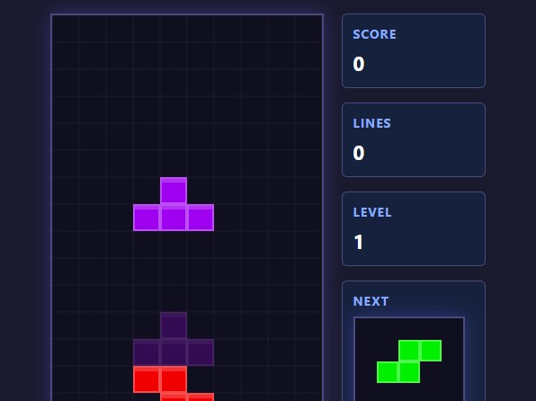
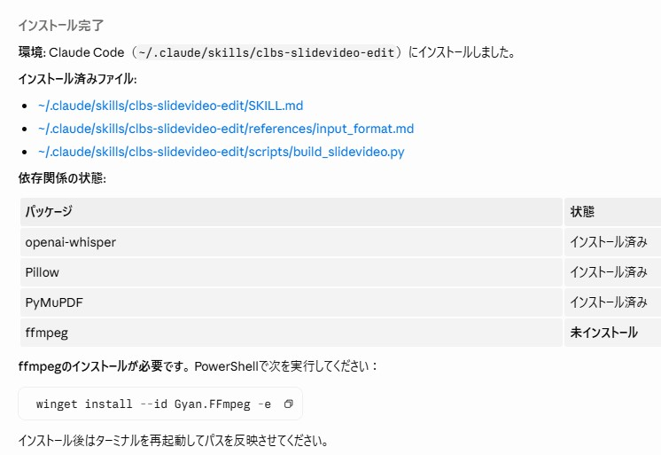

川合 彰
AIと共に創る。
Vibe Coding Works
Claude Code・ChatGPT などの AI ツールを駆使して生み出した
開発成果物のポートフォリオです。
// about
川合 彰について
はじめまして、川合 彰です。 AI ツールを活用した「バイブコーディング」を実践しています。 プログラミングの専門的な知識がなくても、 自然言語で AI に指示するだけでゲーム・Webツール・自動化スクリプトを 形にできることに面白さを感じ、日々取り組んでいます。
従来の開発と最も違うのは「アイデアから動くものができるまでのスピード」。 思いついたその日に試作し、翌日には完成品が手元にある—— そんな開発体験を AI が実現してくれています。
このポートフォリオは、AI と対話しながら生み出してきた 成果物の記録です。これからも作り続けます。
Generated with Nano Banana Pro
// 主な使用ツール
// works
制作実績
AI を使って実際に動くプロダクトを作り続けています。

🎮 ゲーム開発
テトリスゲーム
Tスピン・ハードドロップ・スコア/レベル制まで備えたブラウザ完結のテトリス。 Claude にルール定義と入力ハンドリングを段階的に依頼し、リファクタを重ねて手触りを調整。

🛠 ツール / AI 環境
スライド動画 自動編集スキル
ナレーション音声から、スライド・Bロール・テロップ配置までを自動化する CLI スキルを設計・実装。 Whisper で文字起こし → 台本照合 → タイミング推定 → Premiere Pro XML / SRT 出力までを一本化し、 Claude Code のカスタムスキルとして再利用できるようパッケージ化。
// stats
実績サマリー
2+
作品数
5+
使用 AI ツール
2
カテゴリ
∞
可能性